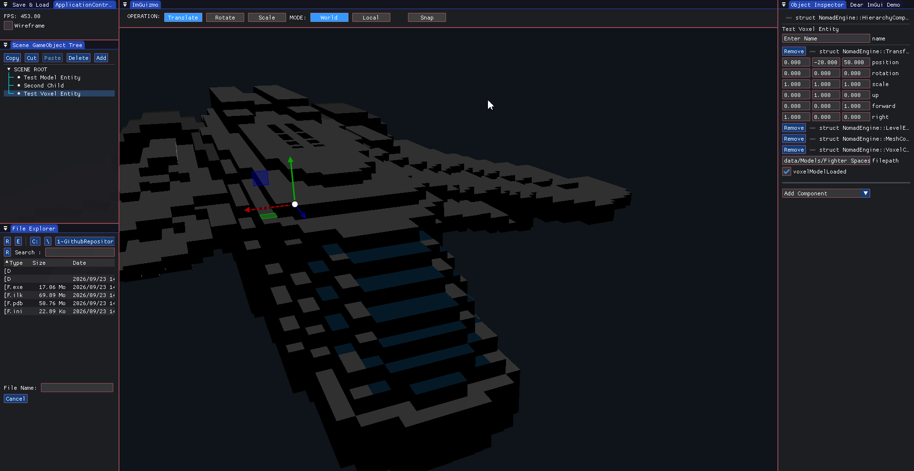

Todd A. Gontarek
Game Engine Developer & Software Engineer


Game Engine Developer & Software Engineer
Galactic Garage
Nomad Game Engine

Neuroevolution Snake AI
CMP301 Graphics Project
Abyssal Depths
Breathing Space
Sincantation
Born to Krill
Speed Lich
Unity Vox Importer